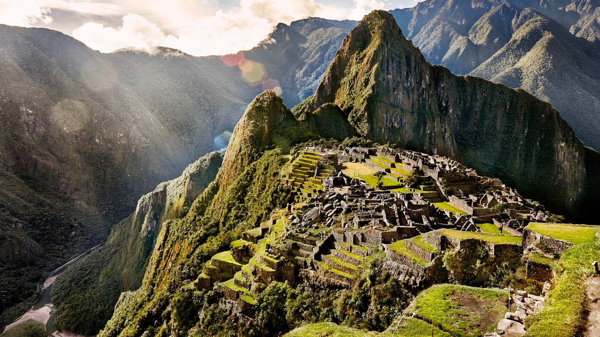
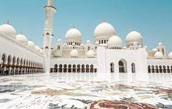
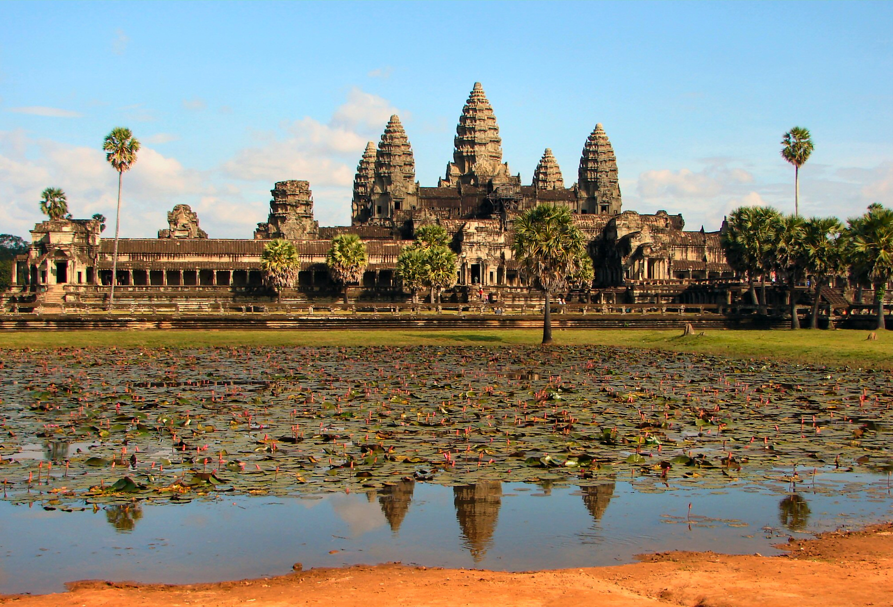
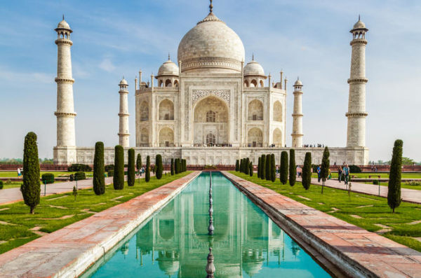

Gato Volador S.A de C.V.
Centros Turísticos

Machu Picchu (Perú)
La ciudad sagrada de Machu Picchu, considerada una de las diez maravillas del mundo, fue declarada Patrimonio de la Humanidad por la Unesco en 1983. La ciudadela fue descubierta por Hiram Bingham en 1911 y se encuentra sobre una montaña de granito, a unos 130 kilómetros de la ciudad de Cusco.
Mas Detalles

Mezquita Sheikh Zayed, Abu Dabi (EAU)
La tercera mezquita más grande del mundo y la mayor de los Emiratos Árabes resulta a ojos de los turistas un lugar espectacular y absolutamente recomendable. Construida en honor al primer presidente del país, la Mezquita Sheikh Zayed destaca por la altura de sus cuatro minaretes, que alcanzan los 107 metros, y por sus columnas -cuenta con 1048 en su exterior y 96 en su interior.
Mas Detalles

Angkor Wat, Siem Reap (Camboya)
El templo de Angkor Wat está considerado la mayor construcción religiosa jamás realizada. Situada en la provincia de Siem Riep, en Camboya, es una de las partes integrantes de un vasto complejo de templos edificados en la zona de Angkor, que en su día fue la capital del imperio jemer
Mas Detalles

Basílica de San Pedro (Vaticano)
La basílica de San Pedro del Vaticano, uno de los rincones más sagrados del catolicismo. Construida entre los años 1506 y 1626 sobre el lugar en el que se cree que están enterrados los restos del apóstol, acoge los actos más multitudinarios que tienen lugar en Roma
Mas Detalles

Taj Mahal, Agra (India)
Taj Mahal es la edificación más bella del mundo. Y es que esta joya histórica, fruto del amor, es un gran mausoleo de mármol blanco construido por el emperador mongol Shah Jahan en honor su esposa favorita fallecida durante el parto de uno de sus hijos. La obra, considerada Patrimonio de la Humanidad por la Unesco, fue levantada entre los años 1631 y 1654 en la ciudad india de Agra
Mas Detalles